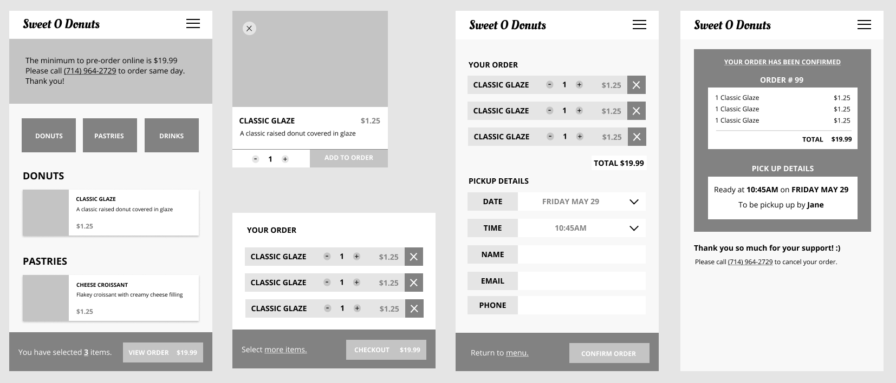
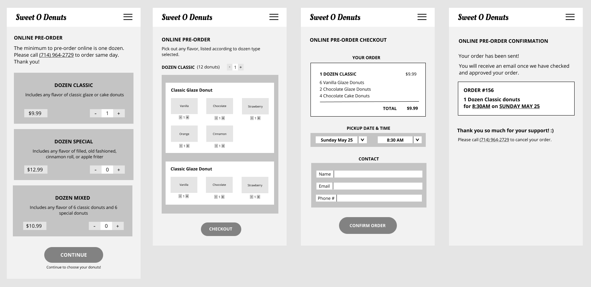

Sweet O Donuts
A small donut shop business website.
Role: UI/UX Designer, Web Designer, Web Developer
Tools: Figma, HTML/CSS/Javascript
Duration: April 2020 - June 2020
Background
Sweet O Donuts is a family-run donut shop in Huntington Beach, California. I have designed and developed a website for their business with the goal of providing easy access to information that customers are curious about, while offering a way to find and purchase products they may be interested in.
Problem Statement
Prior to visiting a business, customers will check the business website for information they need such as the location or menu. When the information is not straightforward or non-existent, it may frustrate the customer and dissuade them from utilizing the business they’ve searched for. Customers need a way to quickly find relevant information about a business in order to ensure a frustration free experience and encourage more purchases.
Needfinding
In a survey I conducted online, I asked participants when and how/often they visit a food business website, what they search for/expect to find, what aspects of the website’s performance is most important, and to describe experiences that improved or negatively impacted their user experience while on a website. I also revealed a pre-design I made based on what I believed a customer would desire and asked for critiques.


Results: Most users check the website of a business prior to their first visit. When visiting the website, the features most expected to be found are the menu, business hours, and customer reviews. Users prefer websites that are fast, mobile friendly, concise, and easy to navigate. The most helpful features users find on other sites are menus with pictures and prices and easy navigation. Users are frustrated when pictures are inaccurate, prices aren’t shown, information is irrelevant, or the site is too complicated.
Competitive Audit

Storyboarding and User Personas
I created storyboards for two personas of potential customers and their needs.
Storyboard #1 - Dave is the manager of a retail business. He likes to take donuts to work to share with his employees. He is often busy so he needs a way to figure out which donuts to purchase and how to order them ahead of time. Jack’s situation would benefit from item recommendations and a simple and clear pathway to order and purchase those items.
Storyboard #2 - Jasmine just moved into a new neighborhood. She is checking online for the local donut shop she had passed by the other day. She hates making decisions on the spot and wants to check the menu to choose which donuts she’ll purchase when she comes to visit. She needs a menu with descriptions and images of individual donuts so she is able to select them.
User Testing
Round 1: Figma Prototypes
Prototype #1 - Individual Items
Prototype #2 - Order by Dozen
Utilizing a survey format, I introduced two figma prototypes for the order feature to participants and asked them to navigate through them as if they were ordering some donuts. After each prototype, I asked if they enjoyed or disliked any specific features. I then asked participants to compare the two designs and choose which was preferrable based on each of Nielsen’s Heuristics. This allowed me to receive feedback on the advantages and disadvantages of each prototype and to consolidate those suggestions into one.
Round 2: Full Figma Prototype
Currenly working on this section!
Round 3: Online Prototype
Currently working on this section!